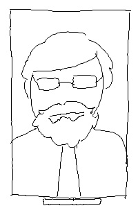

Born in Council Bluffs, Iowa to a well-known family of farmers in 1878, Paul Jackson was raised on the notion that all of the secrets of the universe were held in the soil on their farm. His family knew of nothing else because there was no need to drive into town or get to know the name of their neighbors when the closest people were miles apart. Graduating in 1897 from a local high school, Jackson went to peruse a business degree with a minor in education in one of the big state colleges. What he graduated with was with a college diploma and a desire to go back to his home of rural Iowa with the encouragement and inspiration from the type of people he met out in the world
Southwest College originated in 1913 from the hard work of Jackson's drive to create a community out of his town, which started in an abandoned building on the outskirts of town. After many years of struggle with finances and difficulties with gathering a following from other communities and his own town, SWC was finally recognized as a public institution of higher learning.
 (left) Paul Jackson in 1917
For over one hundred years, the support of the community has been our backbone for giving our students the hands-on experience that is needed to excel in a career. With our immense resources given to us by our network of alumni, we strive to meet every student's need to learn and gain something that will last a life time for an affordable cost. Tradition is nurtured through our curriculum and community service in ways that give reason why we are ranked among the highest small sized colleges in Iowa for generations and for more to come.
Our current selection of majors and minors include +70 mmajors and +30 minors in over 20 different departments. What makes Southwest so unique is our ability to allow students to create their own path towards their major, in which the curriculum provides unrestricted assistance towards the exact career path of your choosing.